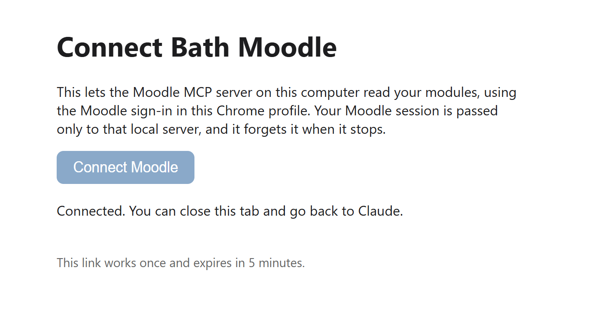

Personal project
Bath Moodle MCP Server
Overview
A Model Context Protocol (MCP) server that lets an LLM such as Claude read my University of Bath Moodle modules: their sections, activities, pages, books, folders and the files inside them. It is read-only, and the LLM never sees my sign-in.
Bath Moodle uses Microsoft single sign-on, so there is no personal Moodle API token to use. Instead, a small companion Chrome extension hands the Moodle session from my own Chrome profile to the server running on my computer, through a one-time link that expires after 5 minutes. The server keeps the session in memory only and forgets it when it stops, after 60 idle minutes, or on sign-out.
What I did
- Wrote the MCP server in Python, with tools to list my modules, browse what is inside a module, section, folder or book, and read the text of pages and files.
- Added text extraction for PDF, Word, PowerPoint and Excel files, and a tool that renders PDF pages as images so the LLM can see equations, diagrams and graphs.
- Built the sign-in handoff: a one-time local link, a pinned Chrome extension that passes the Moodle cookies only to the local server, and a fixed list of read-only Moodle pages the server may request.
- Added a local cache for course structure and extracted text, logging that never records cookies, and a test suite run in CI.
What I learned
Building this taught me how to make my own workflow faster by creating custom tools for AI assistants and integrating them with the services I use every day. Instead of copying course material into a chat by hand, Claude can now find and read it directly.
Gallery
